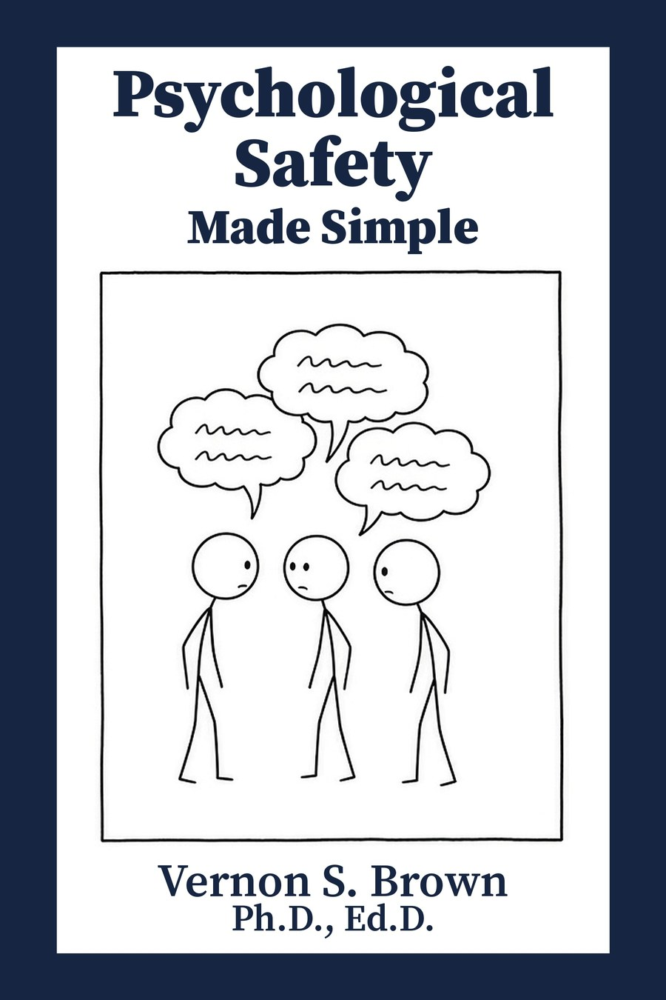

Psychological safety is the belief that you can speak up, ask a question, admit a mistake, or offer a new idea without being punished, embarrassed, or written off for it.
About the book
This book explains that idea in plain language. You will see why the person who leads you matters most. You will see how to invite new ideas and then do something with them, how to see the person and not just the role, and why it takes both sides. You do not need a new program to begin. You can start where you are.
This book draws on nearly a decade of work with psychological safety, and on two in-depth studies I conducted within it, including one with 9,160 employees.
Go deeper
Psychological Safety Made Simple draws on two doctoral dissertations by Vernon S. Brown. Readers who want the full methods and findings can read the original studies.
More books by Vernon S. Brown
The Supervisor Effect Free teaser: Before Anyone Speaks Up For kids: It’s Safe to Ask